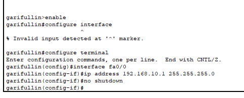
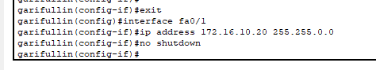
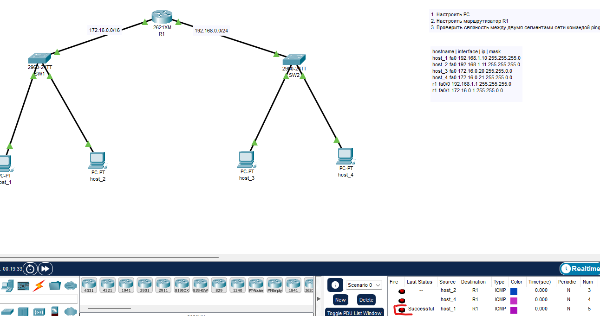

Колледж: Ithub
Группа/подгруппа: 1ЭИТ1-9.24
ФИО: Гарифуллин Ильсаф Рустемович
Год: 2025
Дисциплина: Основы компьютерных сетей
КТ номер 1
Тема: Лабораторная работа в Cisco Packet Tracer
Сначала, я поменял IP адресса, добавив в третьи октеты мой порядковый номер. Далее, поменял настройки в роутерах, и приступил к маршутизатору R1. Я его переименовал на свою фамилию, после начал работать с CLI.
1. garifullin>enable
2. garifullin#configure terminal
3. garifullin(config)#interface fa0/0
4. garifullin(config-if)#ip address 192.168.10.1 255.255.255.0
5. garifullin(config-if)#no shutdown
6. garifullin(config-if)#exit
7. garifullin(config)#interface fa0/1
8. garifullin(config-if)#ip address 172.16.10.20 255.255.0.0
9. garifullin(config-if)#no shutdown
Всё заработало. Чтобы это проверить, я отправлял сообщения с ПК1 на маршутизатор, и все проходило успешно.
Топология работает, всё получилось.
Скачать ЛР (ЯндексДиск)